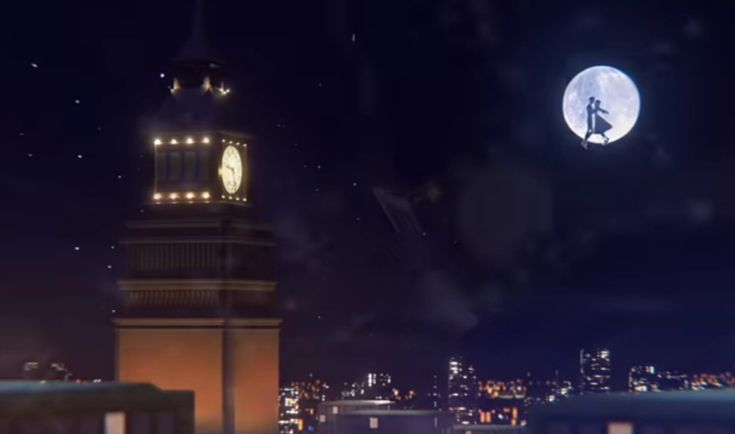

RECORDS / 001
THE EPISODE RECORDS
A collecction of events, discoveries and unanswered questions. Browse the records to follow the story.

SEASON 01 / EPISODE 01
THE BEGINNING
REAL VAMPIRES
The beginning of a strange discovery. What seems impossible starts becoming real.
FILE STATUS:Recorded
WATCH EPISODE ↗SEASON 01 / EPISODE 02
THE REVEAL
Hidden truths begin to surface, changing everything the characters thought they knew.
FILE STATUS:Recorded
WATCH EPISODE ↗SEASON 01 / EPISODE 03
THE FINALE
The first chapter reaces its conclusion, but not every mystery gets an answer.
FILE STATUS:Recorded
WATCH EPISODE ↗SEASON 02 / EPISODE 01
THE STORY CONTINUES
CATCH UP
A new chapter begins as the story revisits what happened and what still remains unresolved.
FILE STATUS:Recorded
WATCH EPISODE ↗SEASON 02 / EPISODE 02
REUNITED
Familiar faces come together again, bringing new questionsand unexpected developments.
FILE STATUS:Recorded
WATCH EPISODE ↗ARCHIVE NOTICE / 005
THE RECORDS REMAIN OPEN
Not every question has an answer. Some discoveries only lead to more mysteries.